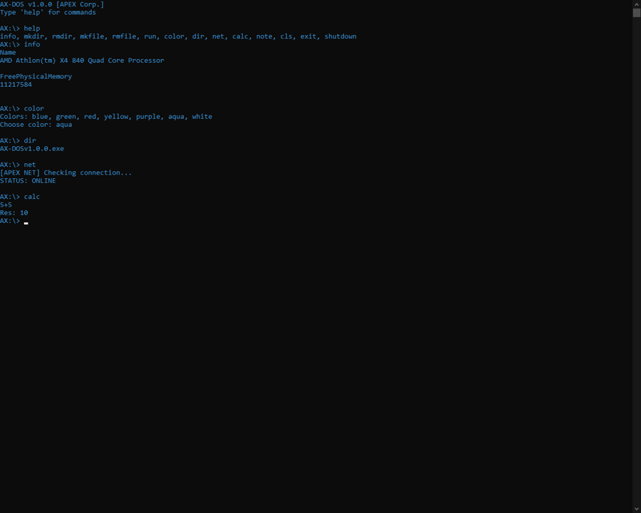

APEX Corporation
Вас приветствует корпорация APEX®.
Эта корпорация создана для тех кому по душе старый софт и системы. На данном сайте вы можете скачать мою систему AX-DOS™ v1.0.0 в виде .exe приложения. Вывод списка команд: help.

СКАЧАТЬ AX-DOS v 1.0.0